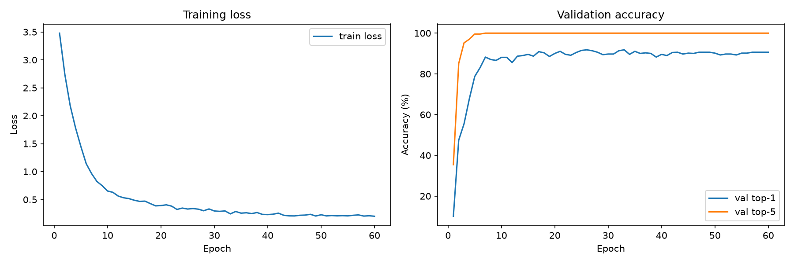
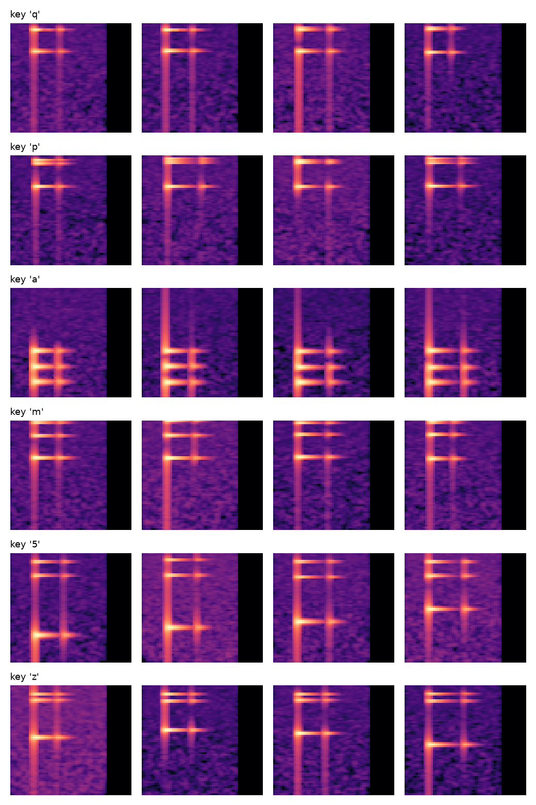

Proof
Results
Real charts from the training run, evaluated on held-out data. Figures are on the project's synthetic benchmark, which proves the pipeline end-to-end. Real-world accuracy depends on the keyboard and room.



